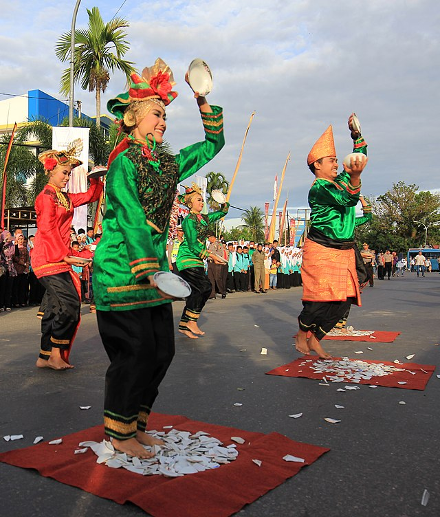
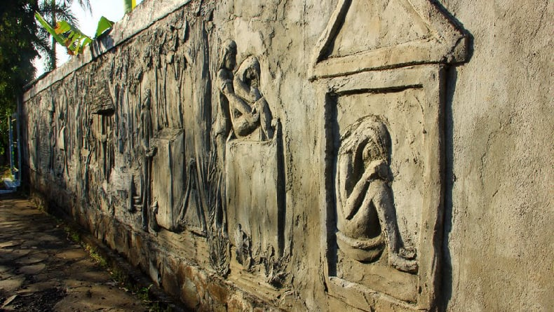
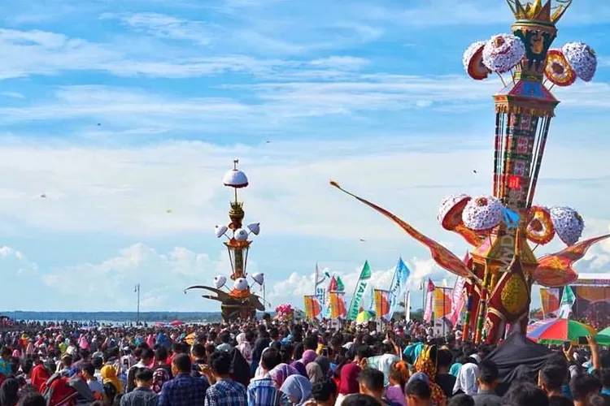

Tarian Tradisional Indonesia
Indonesia memiliki beragam tarian tradisional yang tidak hanya mempesona secara visual tetapi juga sarat dengan makna dan nilai-nilai budaya, mewakili kekayaan budaya dari berbagai suku dan daerah.
Beberapa contoh tarian tradisional Indonesia antara lain:
-
Tari Sanghyang Dedari dari Bali
Tari Sanghyang Dedari adalah tarian sakral yang dilakukan untuk menolak bala dan mengusir roh jahat yang mengganggu kerukunan umat manusia. Tarian ini dipentaskan oleh remaja perempuan yang dianggap masih bersih dan dipilih dua minggu sebelum pementasan. Prosesi pementasan dimulai di pura, dengan penari yang menari bersama dalam gerakan yang sinkron dan indah. Ketika nyanyian berhenti, para penari yang tak sadarkan diri melompat ke tanah, dan seorang pemangku menyadarkan mereka dengan mengucapkan doa dan percikkan air suci. Tarian ini memiliki makna sakral dan sering dipertunjukkan dalam upacara agama Hindu di Bali, khususnya untuk memohon kesehatan dan kesejahteraan desa.

Tari Sanghyang Dedari dari Bali
-
Tari Piring dari Sumatera Barat
Tari Piring adalah tarian tradisional Minangkabau yang berasal dari Solok, Sumatra Barat. Tarian ini awalnya digunakan sebagai ritual untuk mengucapkan rasa syukur atas hasil panen yang melimpah. Penari membawa piring-piring dan menari dengan gerakan dinamis, diiringi oleh alunan musik talempong dan saluang. Gerakan tari ini memiliki makna simbolis yang terkait dengan nilai-nilai kehidupan dan budaya Minangkabau, serta memiliki ciri khas seperti jumlah penari ganjil, kostum berwarna cerah, dan properti piring yang digunakan dalam gerakan yang lincah dan akrobatik.
Tari Piring dari Sumatera Barat
Tradisi Unik Indonesia
Indonesia memiliki berbagai tradisi unik yang mempesona secara visual dan sarat dengan makna budaya, mewakili kekayaan budaya dari berbagai suku dan daerah. setiap tradisi memiliki cerita dan makna yang unik dan berbeda.
Beberapa contoh tradisi unik Indonesia antara lain:
-
Tradisi Pemakaman Suku Minahasa dari Sulawesi Utara
Tradisi pemakaman Suku Minahasa di Sulawesi Utara memiliki ciri khas yang berbeda dari daerah lain. Jenazah diletakkan dalam posisi tumit kaki menempel pada pantat dan kepala mencium lutut, mirip bayi dalam kandungan. Hal ini melambangkan kesucian dan kebaikan, serta menandakan bahwa nenek moyang Suku Minahasa berasal dari utara. Jenazah kemudian dikubur dalam Waruga, sebuah makam batu berbentuk kotak berongga dengan penutup segitiga, yang disebut sebagai tempat badan kembali ke surga. Waruga juga dapat berisi harta benda yang dimiliki jenazah, dan posisi jenazah di dalamnya menyerupai bayi dalam rahim ibu, melambangkan bahwa manusia mengakhiri hidup seperti pada awalnya.
Tradisi Pemakaman Suku Minahasa
-
Tradisi Tabuik dari Sumatera Barat
Bau Nyale adalah tradisi di Lombok yang melibatkan ritual penangkapan cacing laut Nyale sebagai bagian dari perayaan Bau Nyale. Tradisi ini dianggap sakral dan melibatkan masyarakat lokal dalam upaya kolektif untuk menangkap Nyale.
Tradisi Tabuik dari Sumatera Barat